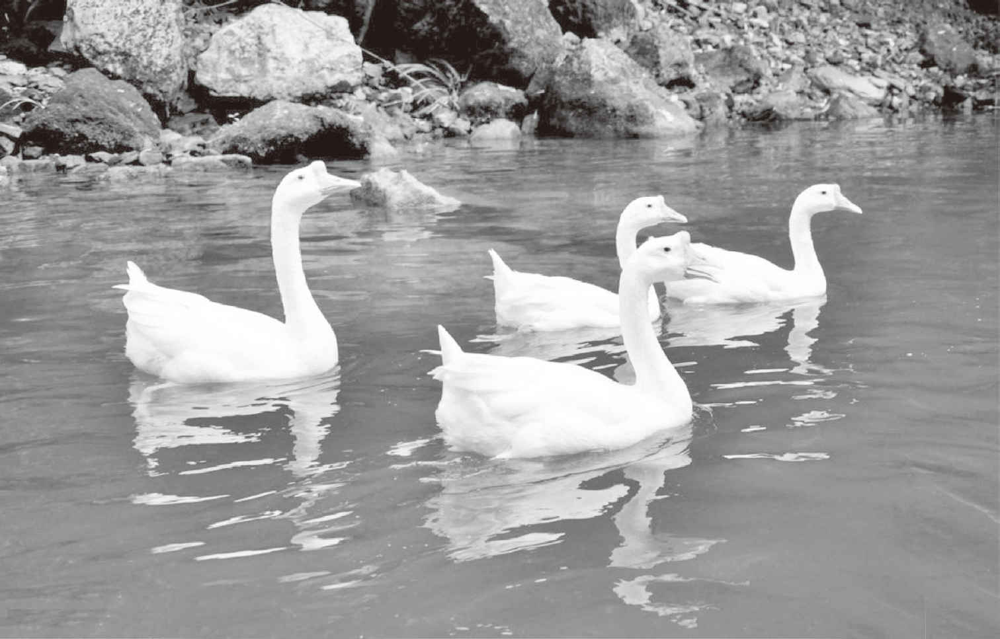

由家养和栽培所引起的能育性的增大
关于同杂交没有任何关系而是由家养所引起的能育性可以大略地在这里考察一下。这个问题在同生物变化有联系的几点上间接地有关系。像很早以前布丰曾经说过[1]的那样，家养动物比同一物种的野生动物在一年之中繁育的次数为多，而且在一胎中所产的仔数也为多；它们有时还在更早的年龄中生育。如果不是一些作者最近试图阐明能育性的增大或降低同食物量成反比例的话，这个例子几乎不值得进一步加以注意。这个奇怪学说的发生，显然是由于个体动物在得到异常大量食物的供给时以及许多种类的植物在生于过分肥沃的土壤中时变成为不育的了：不过关于后一点，不久我还有机会来谈一谈。几乎没有一个例外：长期惯于规则而丰富的食物供给并且不需劳力去寻找食物的家养动物总是比相应的野生动物更加能育。众所周知，猫和狗的繁育次数是多么多，而且在一胎中所产的仔数又是多么多。据说野生兔（wild rabbit）一般地每年繁育四次，并且每次所产的小兔最多是六只；驯兔（tame rabbit）每年繁育六、七次，每次所产的小兔从四只到十一只；哈利逊·威尔先生告诉过我一个例子：一次所产的小兔竟有十八只之多，而且全都活了。雪貂（ferret）一般虽然受到了如此严密的拘禁，却比它的假想野生原型更加多产。母野猪显著是多产的；它常常每年繁育两次，每次所产的小猪从四只到八只，有时甚至到十二只；但母家猪规则地每年繁育两次，如果允许的话，繁育次数还可以更多一些；每次产仔少于八只的母猪“很少值得注意，对于屠户来说，它肥得愈快愈好”。食物的量对于同一个体的能育性有影响：例如，在山上生活的绵羊每次所产的羊羔决不会多于一只，如果在低地牧场中放牧它们，常常产生两只羊羔。这种差异显然不是由于高地的寒冷，因为绵羊和其他家养动物据说在拉伯兰（Lapland）是极其多产的。困难的生活也可以延迟动物的受孕期；因为已经发现，在苏格兰的北方诸岛让牛在四岁以前产仔是不利的[2]。
关于由家养引起能育性的增大，鸟类提供了更好的证据：野生原鸡的母鸽产6个到10个卵，这个数目同家鸡相比是毫不足道的。野鸭产5个到10个卵；驯鸭在一年中可产80个到100个卵。野生灰腿鹅产5个到8个卵；驯鹅产13个到18个卵，并且它还产第二次卵；像狄克逊先生说过的那样，“高度丰富的饲料、细心的管理以及适当的温度可以诱发多产的习性，这种习性多少是遗传的”。半家养的鹁鸽是否比野生岩鸽更加能育，我不知道；但更加彻底家养的品种的能育性几乎相当于鹁鸽的能育性的两倍；然而，如果把鹁鸽养在笼中并且给以高度丰富的饲料，它的能育性就会变得同家鸽的能育性一样。我听审判官凯顿（Caton）说，美国的野生火鸡在一岁的时候不产卵，而家养的火鸡在一岁的时候一定产卵。根据一些记载，在家养的鸟类中只有孔雀当在它的原产地印度野生的时候比它在欧洲的寒冷得多的气候中更加能育[3]。
关于植物，大概没有一个人会期望小麦在瘠薄的土壤中比在肥沃的土壤中分蘗较多而且每一个穗结生子粒较多；也不会期望豌豆和大豆在瘠薄土壤中可以获得丰收。种子的数量有如此重大的变异，以致难于对它们进行估计；但是，在一个苗圃中如果对胡萝卜和野生植株进行比较，前者似乎可以多产两倍左右的种子。栽培甘蓝比原产于南威尔斯岩石间的野生甘蓝按照计算可以多产三倍的蒴。栽培天门冬（Asparagus）同野生植株相比较，前者产生的浆果多得非常。毫无疑问，许多高度栽培的植物，如梨、凤梨、香蕉、甘蔗等，几乎是或者完全是不稔的；我以为这种不稔性可以归因于过剩的食物以及其他不自然的条件；不过以后我还要谈到这个问题。
在一些场合中，例如在猪、兔等以及由于种子而受到重视的那些植物的场合中，对于更能育的个体的直接选择，恐怕大大地增强了它们的能育性；在所有场合中，这种情形可能是间接地发生的，因为从更能育的个体产生出来的无数后代中有些获得了被保存下来的更良好机会。但是，关于猫、雪貂和狗，以及关于像胡萝卜、甘蓝和天门冬那样的非以多产性而受到重视的植物，选择只能起从属的作用；而且它们的增大了的能育性必须归因于它们长期生活于其中的更有利的生活条件。

[1] 小圣伊莱尔引用，《普通博物学》，第三卷，第476页。这个原稿送往印刷之后，在赫伯特·斯宝塞的《生物学原理》（第二卷，1867年，第457页以次）中出现了关于这一问题的充分讨论。
[2] 关于猫和狗等，参阅伯林格里，《自然科学年报》，第二辑，动物部分，第十二卷，第155页。关于雪貂，参阅贝西斯坦，《德国的博物学》，第一卷，1801年，第786，795页。关于兔，同前书，第1123，1131页；以及《勃龙的自然史》，第二卷，第99页。关于山地的绵羊，同前书，第102页。关于母野猪的能育性，参阅贝西斯坦的《德国的博物学》，第一卷，1801年，第534页；关于家猪，参阅尤亚特论猪，西得内版，1860年，第62页。关于拉伯兰，参阅阿塞比（Acerbi）的《北角旅行记》（Travels to the North Cape），英译本，第二卷，第222页，关于高地的牛，参阅《赫戈论羊》，第263页。
[3] 关于原鸡的卵，参阅勃里斯，《博物学年报》，第二辑，第一卷，1848年，第456页。关于野鸭和驯鸭，《麦克季利夫雷》，《英国的鸟类》，第五卷，第37页；《鸭》（Die Enten），第87页。关于野鹅，洛伊得，《斯堪底那维亚探险记》，第二卷，1854年，第413页；关于驯鹅，《观赏的家禽》，狄克逊牧师著，第139页。关于鸽的育种，皮斯特，《鸽的饲育》，1831年，第46页；包依塔和考尔比，《鸽》，第158页。关于孔雀，按照得明克的材料（《鸽的普通博物学》，1813年，第二卷，第41页），雌孔雀在印度甚至可以下二十个卵；但按照季尔顿和另一位作者的材料（在推葛梅尔的《家鸡之书》中引用，1866年，第280，282页），她在那里只产四个到九个或十个卵：据《家鸡之书》所载，据说她在英国产五个到六个卵，但另一位作者说，产八个到十二个卵。